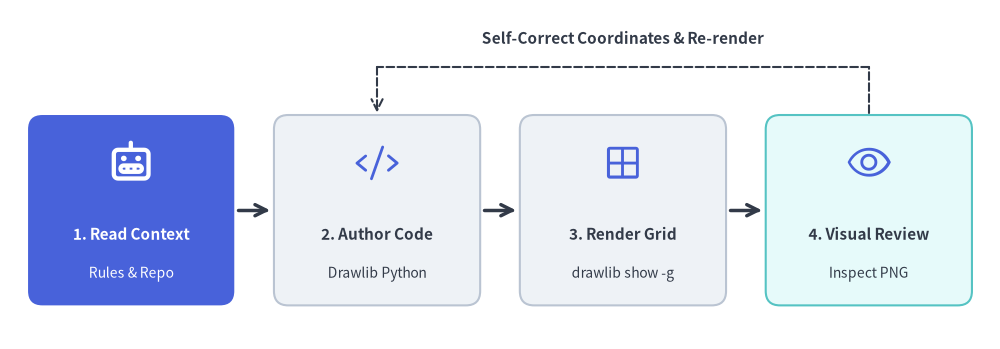

AI-Driven Workflow & Agent Setup
Drawlib v0.3 is engineered from the ground up for autonomous AI coding agents (such as Claude Code, Cursor, Gemini, and GitHub Copilot). Instead of requiring human engineers to manually craft technical specifications and draw architecture diagrams, Drawlib makes it possible to delegate the entire documentation lifecycle to AI agents.

Source Code
from __future__ import annotations
from drawlib.anim import Animation
from drawlib.canvas import save, setup
from drawlib.icons import ai, phosphor
from drawlib.lines import line, lines_curved
from drawlib.shapes import circle, rectangle
from drawlib.styles import Styles
from drawlib.text import text
# 16:9 widescreen canvas matching index.md and overview.md
W, H = 128.0, 72.0
setup(width=W, height=H)
anim = Animation(fps=10.0, loop=0)
STYLE_CHAT_TITLE = Styles.DarkBold.patch(text_size=15.5, halign="left")
STYLE_CHAT_SUCCESS = Styles.SuccessBold.patch(text_size=15.5, halign="left")
STYLE_CHAT_BODY = Styles.Dark.patch(text_size=13.5, halign="left")
PANE_BG = Styles.Neutral.patch(
shape_fill_color=(250, 252, 255),
shape_line_width=0,
shape_r=1.8,
)
PANE_HDR_TOP = Styles.Neutral.patch(
shape_fill_color=(237, 243, 251),
shape_line_width=0,
shape_r=1.8,
)
PANE_HDR_FLAT = Styles.Neutral.patch(
shape_fill_color=(237, 243, 251),
shape_line_width=0,
shape_r=0.0,
)
PANE_BORDER = Styles.Neutral.patch(
shape_fill_color=(0, 0, 0, 0),
shape_line_color=(196, 210, 228),
shape_line_width=1.3,
shape_r=1.8,
)
CARD_NEUTRAL = Styles.Neutral.patch(
shape_fill_color=(255, 255, 255),
shape_line_color=(208, 218, 232),
shape_line_width=1.1,
shape_r=1.4,
)
CARD_ACTIVE = Styles.PrimaryNeutral.patch(
shape_fill_color=(232, 243, 255),
shape_line_color=(45, 115, 225),
shape_line_width=1.5,
shape_r=1.4,
)
CARD_DONE = Styles.SecondaryNeutral.patch(
shape_fill_color=(244, 251, 248),
shape_line_color=(140, 200, 165),
shape_line_width=1.1,
shape_r=1.4,
)
def draw_step_badge(label: str, *, success: bool = False) -> None:
"""Draw consistent top-left step indicator pill across all scenes."""
pill_st = (
Styles.SuccessNeutral.patch(
shape_fill_color=(236, 251, 241),
shape_line_color=(55, 170, 95),
shape_line_width=1.3,
shape_r=2.3,
)
if success
else Styles.PrimaryNeutral.patch(
shape_fill_color=(236, 244, 255),
shape_line_color=(95, 145, 225),
shape_line_width=1.2,
shape_r=2.3,
)
)
txt_st = (
Styles.SuccessBold.patch(text_size=9.8)
if success
else Styles.PrimaryBold.patch(text_size=9.8)
)
rectangle((15.0, 65.2), width=19.0, height=4.6, style=pill_st, text=label, text_style=txt_st)
def draw_user_avatar(xy: tuple[float, float], radius: float = 5.0) -> None:
"""Draw circular User avatar badge."""
circle(
xy,
radius=radius,
style=Styles.Neutral.patch(
shape_fill_color=(244, 247, 252),
shape_line_color=(90, 105, 125),
shape_line_width=1.6,
),
)
phosphor.user(xy, width=radius * 1.25, style=Styles.Dark)
def draw_gemini_avatar(xy: tuple[float, float], radius: float = 5.0) -> None:
"""Draw circular Gemini avatar badge."""
circle(
xy,
radius=radius,
style=Styles.Neutral.patch(
shape_fill_color=(248, 250, 255),
shape_line_color=(85, 125, 195),
shape_line_width=1.5,
),
)
ai.gemini(xy, width=radius * 1.45, style=Styles.Neutral)
def draw_cursor(x: float, y: float, height: float = 4.2) -> None:
"""Draw crisp typewriter cursor bar."""
rectangle(
(x, y),
width=0.6,
height=height,
style=Styles.Neutral.patch(shape_fill_color=(50, 60, 75), shape_line_width=0),
)
def draw_pane(cx: float, width: float) -> None:
"""Draw rounded workspace pane with top header bar (y in [5.5, 55.5])."""
rectangle((cx, 30.5), width=width, height=50.0, style=PANE_BG)
rectangle((cx, 52.3), width=width, height=6.4, style=PANE_HDR_TOP)
rectangle((cx, 50.6), width=width, height=3.0, style=PANE_HDR_FLAT)
line(
(cx - width / 2.0, 49.1),
(cx + width / 2.0, 49.1),
style=Styles.Neutral.patch(line_color=(196, 210, 228), line_width=1.1),
)
rectangle((cx, 30.5), width=width, height=50.0, style=PANE_BORDER)
# =============================================================================
# Step 1: User Requests Documentation
# =============================================================================
def add_scene_1_user_request(anim_obj: Animation) -> None:
"""Scene 1: User asks Gemini to write Service Architecture Doc."""
icon_xy = (15.5, 43.0)
x, y1, y2 = 26.5, 44.5, 35.0
l1_full = "Hi Gemini!"
l2_full = "Please write our Service Architecture Doc with drawlib."
l1_steps = [
("Hi ", 31.2),
("Hi Gem", 36.8),
("Hi Gemini!", 41.4),
]
for chunk, cur_x in l1_steps:
with anim_obj.frame(duration=0.11):
draw_step_badge("Step 1 / 7")
draw_user_avatar(icon_xy)
text((x, y1), chunk, style=STYLE_CHAT_TITLE)
draw_cursor(cur_x, y1, height=4.4)
l2_steps = [
("Please write ", 41.2),
("Please write our Service ", 53.8),
("Please write our Service Architecture ", 68.5),
("Please write our Service Architecture Doc ", 73.6),
("Please write our Service Architecture Doc with drawlib.", 88.2),
]
for chunk, cur_x in l2_steps:
with anim_obj.frame(duration=0.10):
draw_step_badge("Step 1 / 7")
draw_user_avatar(icon_xy)
text((x, y1), l1_full, style=STYLE_CHAT_TITLE)
text((x, y2), chunk, style=STYLE_CHAT_BODY)
draw_cursor(cur_x, y2, height=4.0)
with anim_obj.frame(duration=1.15):
draw_step_badge("Step 1 / 7")
draw_user_avatar(icon_xy)
text((x, y1), l1_full, style=STYLE_CHAT_TITLE)
text((x, y2), l2_full, style=STYLE_CHAT_BODY)
# =============================================================================
# Step 2 (Part A & B): Inspect Git Repository & Query On-Demand Drawlib Rules
# =============================================================================
def draw_workspace_header(step_txt: str, title: str, subtitle: str, *, primary_title: bool = False) -> None:
"""Draw shared top bar for 2-pane agent investigation scenes."""
draw_step_badge(step_txt)
draw_gemini_avatar((31.0, 63.0), radius=3.8)
t_st = (
Styles.PrimaryBold.patch(text_size=12.0, halign="left")
if primary_title
else Styles.DarkBold.patch(text_size=12.0, halign="left")
)
text((36.8, 65.2), title, style=t_st)
text((36.8, 60.2), subtitle, style=Styles.Dark.patch(text_size=10.0, halign="left"))
def draw_repo_inspection_frame(stage: int) -> None:
"""Draw Scene 2A: Gemini reading real source files in Git Repository.
stage 0: Repo tree appears
stage 1: Read src/api/routes.py -> Extract Entrypoint
stage 2: Read src/services/order.py -> Extract Services
stage 3: Read src/db/models.py -> Extract Persistence Layer
"""
draw_workspace_header(
"Step 2 / 7",
"2a. Gemini Inspects Git Repository Files",
"Reading real codebase files directly instead of guessing architecture",
)
# Left Pane: Git Repository Tree
draw_pane(34.5, 58.0)
phosphor.git_branch((10.0, 52.3), width=3.6, style=Styles.DarkBold)
text((13.2, 52.3), "Git Repository — my_service/", style=Styles.DarkBold.patch(text_size=10.5, halign="left"))
rows = [
("src/api/routes.py", "file_code", 1),
("src/services/order.py", "file_code", 2),
("src/db/models.py", "database", 3),
("benchmarks/latency.json", "chart_bar", 99),
("docs_src/styles.py", "palette", 0),
]
ys = [44.2, 37.5, 30.8, 24.1, 17.4]
for (fname, icon_name, active_at), ry in zip(rows, ys):
if active_at == 0:
r_st = CARD_DONE
t_st = Styles.Dark.patch(text_size=9.8, halign="left")
ic_st = Styles.SecondaryBold
badge = ("Theme ✓", Styles.SecondaryBold)
elif stage == active_at:
r_st = CARD_ACTIVE
t_st = Styles.PrimaryBold.patch(text_size=9.8, halign="left")
ic_st = Styles.PrimaryBold
badge = ("Reading", Styles.PrimaryBold)
elif stage > active_at:
r_st = CARD_DONE
t_st = Styles.DarkBold.patch(text_size=9.8, halign="left")
ic_st = Styles.SecondaryBold
badge = ("Read ✓", Styles.SuccessBold)
else:
r_st = CARD_NEUTRAL
t_st = Styles.Muted.patch(text_size=9.6, halign="left")
ic_st = Styles.Muted
badge = ("Metrics" if active_at == 99 else "", Styles.MutedBold)
rectangle((34.5, ry), width=53.0, height=5.4, style=r_st)
getattr(phosphor, icon_name)((11.2, ry), width=3.3, style=ic_st)
text((14.4, ry), fname, style=t_st)
if badge[0]:
text((59.0, ry), badge[0], style=badge[1].patch(text_size=9.5, halign="right"))
# Tool status footer in left pane
rectangle(
(34.5, 10.2),
width=53.0,
height=4.8,
style=Styles.Neutral.patch(shape_fill_color=(241, 245, 252), shape_line_color=(205, 216, 232), shape_line_width=1.0, shape_r=1.0),
)
phosphor.magnifying_glass((11.2, 10.2), width=3.1, style=Styles.PrimaryBold)
text((14.4, 10.2), "Agent Tools: list_dir & view_file on src/", style=Styles.DarkBold.patch(text_size=9.5, halign="left"))
# Center Connector Arrow
line(
(64.2, 30.5),
(68.8, 30.5),
arrow_head="->",
style=Styles.PrimaryBold.patch(line_width=2.0) if stage >= 1 else Styles.MutedThin,
)
# Right Pane: Extracted System Architecture Context
draw_pane(96.0, 53.0)
phosphor.magnifying_glass((74.0, 52.3), width=3.6, style=Styles.PrimaryBold)
text((77.2, 52.3), "Extracted Architecture", style=Styles.DarkBold.patch(text_size=10.5, halign="left"))
extracted = [
(1, 42.0, "globe", "Entrypoint", "Client -> API Gateway (:8080)"),
(2, 30.2, "arrows_split", "Core Services", "Auth Service & Order Worker"),
(3, 18.4, "database", "Data Layer", "PostgreSQL + Redis Cache"),
]
for req_stage, cy, ic, title, detail in extracted:
if stage >= req_stage:
is_now = stage == req_stage
c_st = CARD_ACTIVE if is_now else CARD_NEUTRAL
rectangle((96.0, cy), width=48.0, height=10.2, style=c_st)
getattr(phosphor, ic)((76.2, cy), width=4.2, style=Styles.PrimaryBold)
text((80.2, cy + 2.2), title, style=Styles.DarkBold.patch(text_size=10.2, halign="left"))
text((80.2, cy - 2.3), detail, style=Styles.PrimaryBold.patch(text_size=9.6, halign="left"))
if stage >= 3:
rectangle(
(96.0, 9.6),
width=48.0,
height=4.6,
style=Styles.SuccessNeutral.patch(shape_r=1.1, shape_line_width=1.1),
text="Grounded in real repository code ✓",
text_style=Styles.SuccessBold.patch(text_size=9.5),
)
def draw_rules_lookup_frame(stage: int) -> None:
"""Draw Scene 2B: Gemini querying `drawlib rules show <topic>` via CLI.
stage 1: drawlib rules show overview
stage 2: drawlib rules show style-guide
stage 3: drawlib rules show lib-diagrams
"""
draw_workspace_header(
"Step 2 / 7",
"2b. Gemini Queries On-Demand Drawlib Rules",
"Fetching exact coordinate, style & diagram API manuals via CLI",
primary_title=True,
)
# Left Pane: Agent CLI Shell
draw_pane(34.5, 58.0)
phosphor.terminal_window((10.0, 52.3), width=3.7, style=Styles.PrimaryBold)
text((13.2, 52.3), "Agent CLI — drawlib rules show", style=Styles.DarkBold.patch(text_size=10.5, halign="left"))
cmds = [
(1, 41.2, "$ drawlib rules show overview", "Fetch (0,0) origin & anchor table"),
(2, 27.6, "$ drawlib rules show style-guide", "Fetch 50%+ Neutral & text_size >= 10"),
(3, 14.0, "$ drawlib rules show lib-diagrams", "Fetch ArchitectureDiagram Python API"),
]
for req_stage, cy, cmd, desc in cmds:
if stage == req_stage:
c_st = CARD_ACTIVE
cmd_st = Styles.PrimaryBold.patch(text_size=10.0, halign="left")
desc_st = Styles.Dark.patch(text_size=9.5, halign="left")
elif stage > req_stage:
c_st = CARD_DONE
cmd_st = Styles.DarkBold.patch(text_size=9.8, halign="left")
desc_st = Styles.Dark.patch(text_size=9.5, halign="left")
else:
c_st = CARD_NEUTRAL
cmd_st = Styles.MutedBold.patch(text_size=9.8, halign="left")
desc_st = Styles.Muted.patch(text_size=9.5, halign="left")
rectangle((34.5, cy), width=53.0, height=11.4, style=c_st)
text((10.4, cy + 2.3), cmd, style=cmd_st)
text((10.4, cy - 2.4), desc, style=desc_st)
if stage == req_stage:
text((59.0, cy + 2.3), "Running", style=Styles.PrimaryBold.patch(text_size=9.5, halign="right"))
elif stage > req_stage:
phosphor.check_circle((58.5, cy + 2.3), width=3.2, style=Styles.Success)
# Center Connector Arrow
line((64.2, 30.5), (68.8, 30.5), arrow_head="->", style=Styles.PrimaryBold.patch(line_width=2.0))
# Right Pane: Injected Rule Manuals
draw_pane(96.0, 53.0)
phosphor.book_bookmark((74.0, 52.3), width=3.7, style=Styles.PrimaryBold)
text((77.2, 52.3), "Loaded API & Style Rules", style=Styles.DarkBold.patch(text_size=10.5, halign="left"))
manuals = [
(1, 41.2, "compass", "Geometry & Anchors", "Shapes: Center | Diagrams: Corner", Styles.Dark),
(2, 27.6, "palette", "Visual Harmony", "50%+ Neutral + 1-2 Focal Nodes", Styles.Dark),
(3, 14.0, "flow_arrow", "Verified Signatures", "Zero API Hallucinations ✓", Styles.SuccessBold),
]
for req_stage, cy, ic, title, detail, det_base in manuals:
if stage >= req_stage:
c_st = CARD_ACTIVE if stage == req_stage else CARD_NEUTRAL
rectangle((96.0, cy), width=48.0, height=11.4, style=c_st)
getattr(phosphor, ic)((76.2, cy), width=4.2, style=Styles.PrimaryBold)
text((80.2, cy + 2.3), title, style=Styles.DarkBold.patch(text_size=10.2, halign="left"))
text((80.2, cy - 2.4), detail, style=det_base.patch(text_size=9.5, halign="left"))
def add_scene_2_context_and_rules(anim_obj: Animation) -> None:
"""Step 2: Detailed Repo inspection followed by on-demand drawlib rules lookup."""
# Part 2A: Git Repository Reading
with anim_obj.frame(duration=0.55):
draw_repo_inspection_frame(stage=0)
with anim_obj.frame(duration=0.95):
draw_repo_inspection_frame(stage=1)
with anim_obj.frame(duration=0.95):
draw_repo_inspection_frame(stage=2)
with anim_obj.frame(duration=1.50):
draw_repo_inspection_frame(stage=3)
# Part 2B: On-Demand Drawlib Rules CLI
with anim_obj.frame(duration=1.00):
draw_rules_lookup_frame(stage=1)
with anim_obj.frame(duration=1.00):
draw_rules_lookup_frame(stage=2)
with anim_obj.frame(duration=1.65):
draw_rules_lookup_frame(stage=3)
# =============================================================================
# Step 3 & Step 6B: Author / Update Drawlib Markdown File (spec.md)
# =============================================================================
def draw_mini_arch_preview(cx: float, cy: float, *, compact: bool = False) -> None:
"""Draw clean 3-node architecture diagram preview inside Markdown code block."""
pw, ph = (23.0, 8.2) if compact else (25.0, 15.5)
rectangle(
(cx, cy),
width=pw,
height=ph,
style=Styles.Neutral.patch(shape_fill_color=(255, 255, 255), shape_line_color=(175, 200, 230), shape_line_width=1.0, shape_r=1.0),
)
spread_x = 6.2 if compact else 6.8
spread_y = 2.0 if compact else 4.0
r = 1.4 if compact else 2.2
n1 = (cx - spread_x, cy)
n2 = (cx + spread_x * 0.75, cy + spread_y)
n3 = (cx + spread_x * 0.75, cy - spread_y)
wire = Styles.Neutral.patch(line_color=(110, 145, 190), line_width=1.3)
line(n1, n2, style=wire)
line(n1, n3, style=wire)
line(n2, n3, style=wire)
circle(n1, radius=r, style=Styles.PrimaryFlat)
for pt in (n2, n3):
circle(
pt,
radius=r,
style=Styles.Neutral.patch(shape_fill_color=(242, 247, 255), shape_line_color=(80, 125, 185), shape_line_width=1.3),
)
def draw_mini_barchart_preview(cx: float, cy: float) -> None:
"""Draw clean 3-bar latency chart preview inside Round 2 Markdown code block."""
pw, ph = 25.0, 14.0
rectangle(
(cx, cy),
width=pw,
height=ph,
style=Styles.Neutral.patch(shape_fill_color=(255, 255, 255), shape_line_color=(150, 185, 230), shape_line_width=1.1, shape_r=1.0),
)
base_y = cy - 4.8
# Axes
axis_st = Styles.Neutral.patch(line_color=(130, 148, 170), line_width=1.1)
line((cx - 9.2, base_y), (cx + 9.5, base_y), style=axis_st)
line((cx - 9.2, base_y), (cx - 9.2, cy + 5.2), style=axis_st)
# 3 latency bars (42ms -> 24ms -> 12ms)
bars = [
(cx - 4.8, 8.6, Styles.Neutral.patch(shape_fill_color=(195, 212, 235), shape_line_width=0)),
(cx + 0.6, 5.4, Styles.PrimaryNeutral.patch(shape_fill_color=(125, 170, 235), shape_line_width=0)),
(cx + 6.0, 3.0, Styles.PrimaryFlat.patch(shape_line_width=0)),
]
for bx, bh, bst in bars:
rectangle((bx, base_y + bh / 2.0), width=3.4, height=bh, style=bst)
def draw_markdown_scene(round_num: int, step: int) -> None:
"""Draw Page-6-style Drawlib Markdown File authoring / updating scene."""
draw_step_badge("Step 3 / 7" if round_num == 1 else "Step 6 / 7")
# Left side: Active Gemini Agent Card + Context Summary Card
lx = 22.5
rectangle((lx, 46.5), width=34.0, height=15.0, style=CARD_ACTIVE)
draw_gemini_avatar((11.8, 46.5), radius=3.7)
text((17.0, 49.0), "Gemini Agent", style=Styles.DarkBold.patch(text_size=10.6, halign="left"))
status_msg = "Writing spec.md..." if round_num == 1 else "Updating spec.md..."
text((17.0, 44.0), status_msg, style=Styles.PrimaryBold.patch(text_size=9.8, halign="left"))
rectangle((lx, 26.5), width=34.0, height=17.0, style=CARD_NEUTRAL)
if round_num == 1:
phosphor.file_text((lx, 31.3), width=4.4, style=Styles.PrimaryBold)
text((lx, 25.8), "Single Source (.md)", style=Styles.DarkBold.patch(text_size=10.2))
text((lx, 21.2), "Prose + Python Code", style=Styles.Dark.patch(text_size=9.6))
else:
phosphor.chart_bar((lx, 31.3), width=4.4, style=Styles.PrimaryBold)
text((lx, 25.8), "Round 2 Update", style=Styles.PrimaryBold.patch(text_size=10.2))
text((lx, 21.2), "+ BarChart Code Block", style=Styles.DarkBold.patch(text_size=9.6))
# Right side: Drawlib Markdown File Container (spec.md)
f_cx, f_cy, f_w, f_h = 83.5, 31.0, 77.0, 52.4
text((f_cx, 65.2), "Drawlib Markdown File — spec.md", style=Styles.DarkBold.patch(text_size=12.5))
text(
(f_cx, 60.0),
"(Markdown prose & executable Drawlib code live in the same context)",
style=Styles.Dark.patch(text_size=9.8, text_color=(95, 110, 130)),
)
rectangle(
(f_cx, f_cy),
width=f_w,
height=f_h,
style=Styles.Neutral.patch(
shape_fill_color=(252, 253, 255),
shape_line_color=(182, 198, 220),
shape_line_width=1.4,
shape_r=1.8,
),
)
md_block_st = Styles.Neutral.patch(
shape_fill_color=(243, 246, 251),
shape_line_color=(208, 220, 236),
shape_line_width=1.0,
shape_r=1.1,
)
if round_num == 1:
if step >= 1:
rectangle((f_cx, 49.0), width=69.0, height=9.0, style=md_block_st)
text((f_cx, 49.0), "Markdown Text — # 1. System Architecture", style=Styles.DarkBold.patch(text_size=10.5))
if step >= 2:
rectangle(
(f_cx, 31.0),
width=69.0,
height=21.0,
style=Styles.PrimaryNeutral.patch(
shape_fill_color=(235, 244, 255),
shape_line_color=(115, 165, 228),
shape_line_width=1.5,
shape_r=1.3,
),
)
text((53.0, 35.2), "Python Drawlib Code", style=Styles.PrimaryBold.patch(text_size=11.0, halign="left"))
text((53.0, 30.2), "ArchitectureDiagram", style=Styles.DarkBold.patch(text_size=10.2, halign="left"))
text((53.0, 25.4), "Gateway -> Services -> DB", style=Styles.Dark.patch(text_size=9.6, halign="left"))
draw_mini_arch_preview(102.5, 31.0, compact=False)
if step >= 3:
rectangle((f_cx, 13.0), width=69.0, height=9.0, style=md_block_st)
text((f_cx, 13.0), "Markdown Text — ## 2. Request Routing & Data Flow", style=Styles.DarkBold.patch(text_size=10.5))
else:
# Round 2: Existing blocks compact at top + newly inserted BarChart block!
rectangle((f_cx, 51.8), width=69.0, height=6.2, style=md_block_st)
text((f_cx, 51.8), "Markdown Text — # 1. System Architecture", style=Styles.MutedBold.patch(text_size=9.8))
rectangle(
(f_cx, 41.8),
width=69.0,
height=10.4,
style=Styles.Neutral.patch(
shape_fill_color=(244, 248, 254),
shape_line_color=(185, 205, 230),
shape_line_width=1.1,
shape_r=1.1,
),
)
text((53.0, 43.8), "Python Drawlib Code", style=Styles.DarkBold.patch(text_size=10.0, halign="left"))
text((53.0, 39.6), "ArchitectureDiagram (Verified ✓)", style=Styles.SecondaryBold.patch(text_size=9.5, halign="left"))
draw_mini_arch_preview(103.5, 41.8, compact=True)
if step >= 2:
rectangle(
(f_cx, 25.0),
width=69.0,
height=18.2,
style=Styles.PrimaryNeutral.patch(
shape_fill_color=(230, 242, 255),
shape_line_color=(37, 99, 235),
shape_line_width=1.8,
shape_r=1.3,
),
)
rectangle(
(58.5, 30.8),
width=11.0,
height=3.6,
style=Styles.PrimaryFlat.patch(shape_r=0.9),
text="ADDED",
text_style=Styles.WhiteBold.patch(text_size=9.5),
)
text((53.0, 25.0), "Python Drawlib Code", style=Styles.PrimaryBold.patch(text_size=10.8, halign="left"))
text((53.0, 20.0), "BarChart (p95 Latency)", style=Styles.DarkBold.patch(text_size=10.0, halign="left"))
draw_mini_barchart_preview(102.5, 25.0)
if step >= 3:
rectangle((f_cx, 10.4), width=69.0, height=6.4, style=md_block_st)
text((f_cx, 10.4), "Markdown Text — ## 3. Latency Benchmark Summary", style=Styles.DarkBold.patch(text_size=9.8))
def add_scene_3_markdown_round1(anim_obj: Animation) -> None:
"""Step 3: Author initial Drawlib Markdown file."""
with anim_obj.frame(duration=0.45):
draw_markdown_scene(round_num=1, step=0)
with anim_obj.frame(duration=0.85):
draw_markdown_scene(round_num=1, step=1)
with anim_obj.frame(duration=1.10):
draw_markdown_scene(round_num=1, step=2)
with anim_obj.frame(duration=1.50):
draw_markdown_scene(round_num=1, step=3)
# =============================================================================
# Step 4 & Step 6C: AI Inner Loop & Human Outer Loop
# =============================================================================
def draw_loop_scene(step: str, round_num: int) -> None:
"""Draw Page-11-style AI Inner Loop & Human Outer Loop with crisp >=9.5pt labels."""
draw_step_badge("Step 4 / 7" if round_num == 1 else "Step 6 / 7")
is_inner = step in ("export_1", "inspect_1", "repair", "export_2", "inspect_2", "pass")
muted_arrow = Styles.Neutral.patch(line_color=(195, 210, 228), line_width=1.2)
muted_txt_color = (138, 152, 172)
# 1. Outer Dashed AI Inner Loop Container (x in [27.0, 98.0], y in [13.5, 67.5])
rectangle(
(62.5, 40.5),
width=71.0,
height=54.0,
style=Styles.MutedDashed.patch(
shape_r=2.4,
shape_line_width=1.5 if is_inner else 1.1,
shape_line_color=(85, 140, 220) if is_inner else (185, 200, 220),
),
)
phosphor.arrows_clockwise((35.5, 64.2), width=3.6, style=Styles.Primary)
text(
(64.5, 64.2),
"AI Inner Loop (Autonomous Self-Repair)",
style=Styles.PrimaryBold.patch(
text_size=10.0,
text_color=(35, 90, 205) if is_inner else (90, 115, 145),
),
)
# 2. Top Context Cards (Rules & Repo -> Gemini Agent)
for cx, ic, lbl in [(36.5, "book_open_text", "Rules"), (53.0, "file_code", "Repo")]:
rectangle(
(cx, 56.5),
width=15.0,
height=7.0,
style=Styles.PrimaryNeutral.patch(
shape_fill_color=(244, 249, 255),
shape_line_color=(165, 195, 232),
shape_line_width=1.1,
shape_r=1.3,
),
)
getattr(phosphor, ic)((cx - 4.3, 56.5), width=3.0, style=Styles.Primary)
text((cx + 1.5, 56.5), lbl, style=Styles.DarkBold.patch(text_size=9.6))
line((cx, 53.0), (cx, 48.0), arrow_head="->", style=muted_arrow)
# 3. Left: User Card (x in [4.75, 21.25], y in [31.0, 49.0])
act_dev = step == "outer_loop"
rectangle(
(13.0, 40.0),
width=16.5,
height=18.0,
style=Styles.Neutral.patch(
shape_fill_color=(238, 246, 255) if act_dev else (252, 253, 255),
shape_line_color=(55, 125, 215) if act_dev else (195, 208, 225),
shape_line_width=1.7 if act_dev else 1.2,
shape_r=2.0,
),
)
phosphor.user((13.0, 44.3), width=4.8, style=Styles.Dark)
text((13.0, 38.6), "User", style=Styles.DarkBold.patch(text_size=10.5))
text(
(13.0, 34.0),
"Reviewing" if act_dev else ("Prompt" if round_num == 1 else "+ Chart"),
style=Styles.PrimaryBold.patch(text_size=9.5) if act_dev else Styles.Dark.patch(text_size=9.5),
)
line((21.25, 40.0), (29.0, 40.0), arrow_head="->", style=muted_arrow)
# 4. Gemini Agent Card (x in [29.0, 60.0], y in [32.0, 48.0])
act_agent = step in ("export_1", "repair", "export_2")
rectangle(
(44.5, 40.0),
width=31.0,
height=16.0,
style=Styles.PrimaryFlat.patch(
shape_fill_color=(38, 92, 212) if act_agent else (62, 108, 200),
shape_line_color=(25, 68, 178),
shape_line_width=1.8 if act_agent else 1.2,
shape_r=2.0,
),
)
circle((34.6, 40.0), radius=3.9, style=Styles.Neutral.patch(shape_fill_color=(255, 255, 255), shape_line_width=0))
ai.gemini((34.6, 40.0), width=5.6, style=Styles.Neutral)
text((40.0, 42.6), "Gemini Agent", style=Styles.WhiteBold.patch(text_size=10.2, halign="left"))
agent_sub = "Fix Coords" if step == "repair" else ("Write spec.md" if round_num == 1 else "Add BarChart")
text((40.0, 37.2), agent_sub, style=Styles.White.patch(text_size=9.5, halign="left"))
# 5. Grid Preview Card (x in [68.0, 96.0], y in [33.25, 51.75])
prev_cx = 82.0
act_prev = step in ("export_1", "inspect_1", "export_2", "inspect_2")
has_defect = step in ("export_1", "inspect_1", "repair")
rectangle(
(prev_cx, 42.5),
width=28.0,
height=18.5,
style=Styles.Neutral.patch(
shape_fill_color=(243, 249, 255) if act_prev else (252, 253, 255),
shape_line_color=(55, 130, 220) if act_prev else (195, 208, 225),
shape_line_width=1.7 if act_prev else 1.2,
shape_r=2.0,
),
)
phosphor.grid_four((71.8, 47.7), width=4.0, style=Styles.Primary)
text((75.2, 47.7), "Grid Preview", style=Styles.DarkBold.patch(text_size=10.0, halign="left"))
text((prev_cx, 43.3), "drawlib show -g", style=Styles.PrimaryBold.patch(text_size=9.5))
# Mini coordinate grid box inside Grid Preview (shows defect -> fixed!)
g_cy = 37.3
g_base = g_cy - 2.3
rectangle(
(prev_cx, g_cy),
width=22.0,
height=5.6,
style=Styles.Neutral.patch(
shape_fill_color=(255, 245, 245) if has_defect else (238, 246, 255),
shape_line_color=(230, 145, 145) if has_defect else (175, 205, 235),
shape_line_width=0.9,
),
)
line((71.0, g_cy), (93.0, g_cy), style=Styles.Muted.patch(line_width=0.5))
line((76.8, g_cy - 2.8), (76.8, g_cy + 2.8), style=Styles.Muted.patch(line_width=0.5))
line((87.2, g_cy - 2.8), (87.2, g_cy + 2.8), style=Styles.Muted.patch(line_width=0.5))
if round_num == 1:
if has_defect:
circle((80.6, g_cy), radius=1.5, style=Styles.DangerFlat)
circle((82.4, g_cy), radius=1.5, style=Styles.DangerFlat)
else:
circle((76.5, g_cy), radius=1.4, style=Styles.PrimaryFlat)
circle((87.5, g_cy), radius=1.4, style=Styles.SuccessFlat)
else:
if has_defect:
rectangle((80.4, g_base + 2.2), width=2.4, height=4.4, style=Styles.DangerFlat)
rectangle((82.2, g_base + 1.6), width=2.4, height=3.2, style=Styles.DangerFlat)
else:
for bx, bh, bst in [
(76.5, 4.3, Styles.Neutral.patch(shape_fill_color=(165, 195, 232), shape_line_width=0)),
(82.0, 2.9, Styles.PrimaryFlat.patch(shape_line_width=0)),
(87.5, 1.8, Styles.SuccessFlat.patch(shape_line_width=0)),
]:
rectangle((bx, g_base + bh / 2.0), width=2.4, height=bh, style=bst)
act_export = step in ("export_1", "export_2")
exp_arrow = Styles.PrimaryBold.patch(line_width=2.8, line_color=(30, 95, 225)) if act_export else muted_arrow
line((60.0, 40.0), (68.0, 40.0), arrow_head="->", style=exp_arrow)
text(
(64.0, 43.2),
"Render",
style=Styles.DarkBold.patch(text_size=9.5, text_color=(25, 85, 210) if act_export else muted_txt_color),
)
# 6. Visual Review Card (x in [68.0, 96.0], y in [14.5, 27.5])
act_insp = step in ("inspect_1", "repair", "inspect_2", "pass")
rectangle(
(prev_cx, 21.0),
width=28.0,
height=13.0,
style=Styles.SecondaryNeutral.patch(
shape_fill_color=(235, 252, 252) if act_insp else (247, 253, 253),
shape_line_color=(35, 170, 180) if act_insp else (175, 208, 212),
shape_line_width=1.7 if act_insp else 1.2,
shape_r=2.0,
),
)
phosphor.eye((72.0, 23.4), width=4.2, style=Styles.Secondary)
text((75.5, 23.4), "Visual Review", style=Styles.DarkBold.patch(text_size=10.0, halign="left"))
insp_sub = "Overlap Found!" if step in ("inspect_1", "repair") else "Layout Clean ✓"
insp_st = (
Styles.WarningBold.patch(text_size=9.5)
if step in ("inspect_1", "repair")
else Styles.SecondaryBold.patch(text_size=9.5)
)
text((prev_cx, 18.0), insp_sub if act_insp else "Multimodal Check", style=insp_st)
act_check = step in ("inspect_1", "inspect_2")
chk_arrow = Styles.SecondaryBold.patch(line_width=2.8, line_color=(15, 155, 165)) if act_check else muted_arrow
line((prev_cx, 33.25), (prev_cx, 27.5), arrow_head="->", style=chk_arrow)
text(
(87.0, 30.4),
"Check",
style=Styles.SecondaryBold.patch(text_size=9.5, text_color=(15, 145, 155) if act_check else muted_txt_color),
)
# 7. Self-Repair Loop (Visual Review -> Gemini Agent)
act_repair = step == "repair"
rep_arrow = Styles.WarningBold.patch(line_width=3.0, line_color=(240, 120, 10)) if act_repair else muted_arrow
lines_curved([(68.0, 21.0), (44.5, 21.0), (44.5, 32.0)], r=2.5, arrow_head="->", style=rep_arrow)
rectangle(
(56.2, 21.0),
width=18.0,
height=4.8,
style=Styles.Neutral.patch(
shape_fill_color=(255, 242, 224) if act_repair else (255, 253, 249),
shape_line_color=(235, 125, 15) if act_repair else (222, 210, 190),
shape_line_width=1.6 if act_repair else 0.9,
shape_r=1.5,
),
text="Self-Repair",
text_style=Styles.WarningBold.patch(
text_size=9.5,
text_color=(220, 100, 5) if act_repair else muted_txt_color,
),
)
# 8. Pass ✓ -> Docs Ready Card (x in [106.25, 123.75], y in [12.5, 29.5])
act_pass = step in ("pass", "outer_loop")
p_arrow = Styles.SuccessBold.patch(line_width=3.0, line_color=(30, 170, 65)) if act_pass else muted_arrow
line((96.0, 21.0), (106.25, 21.0), arrow_head="->", style=p_arrow)
text(
(102.2, 24.4),
"Pass ✓",
style=Styles.SuccessBold.patch(text_size=9.5, text_color=(25, 155, 55) if act_pass else muted_txt_color),
)
rectangle(
(115.0, 21.0),
width=17.5,
height=17.0,
style=Styles.SuccessNeutral.patch(
shape_fill_color=(236, 252, 238) if act_pass else (248, 253, 249),
shape_line_color=(45, 175, 80) if act_pass else (175, 205, 182),
shape_line_width=1.7 if act_pass else 1.2,
shape_r=2.0,
),
)
phosphor.seal_check((115.0, 25.5), width=4.8, style=Styles.Success.patch(icon_style="fill"))
text((115.0, 19.8), "Docs", style=Styles.DarkBold.patch(text_size=10.2))
text(
(115.0, 15.3),
"v1 Ready" if round_num == 1 else "v2 Ready",
style=Styles.SuccessBold.patch(text_size=9.5) if act_pass else Styles.Muted.patch(text_size=9.5),
)
# 9. Human Outer Loop (Docs Ready -> User along y = 6.8)
act_outer = step == "outer_loop"
out_arrow = Styles.DarkBold.patch(line_width=2.8, line_color=(30, 58, 105)) if act_outer else muted_arrow
lines_curved(
[(115.0, 12.5), (115.0, 6.8), (13.0, 6.8), (13.0, 31.0)],
r=3.0,
arrow_head="->",
style=out_arrow,
)
rectangle(
(63.5, 6.8),
width=58.0,
height=4.8,
style=Styles.Neutral.patch(
shape_fill_color=(240, 248, 255) if act_outer else (254, 255, 255),
shape_line_color=(65, 130, 215) if act_outer else (205, 215, 230),
shape_line_width=1.6 if act_outer else 1.0,
shape_r=2.4,
),
text="Human Outer Loop: Show Preview to User",
text_style=Styles.DarkBold.patch(
text_size=9.6,
text_color=(20, 48, 92) if act_outer else muted_txt_color,
),
)
def add_scene_4_loop_round1(anim_obj: Animation) -> None:
"""Step 4: Run AI Inner Loop self-repair and present Docs v1 to User."""
seq = [
("export_1", 0.65),
("inspect_1", 0.55),
("repair", 1.00),
("export_2", 0.55),
("inspect_2", 0.50),
("pass", 0.85),
("outer_loop", 1.40),
]
for st, dur in seq:
with anim_obj.frame(duration=dur):
draw_loop_scene(step=st, round_num=1)
# =============================================================================
# Step 5: User Reviews & Requests Missing Chart Data
# =============================================================================
def draw_feedback_summary_card() -> None:
"""Draw Round 1 review summary card showing Architecture OK + Request Chart."""
rectangle(
(68.0, 19.5),
width=96.0,
height=20.0,
style=Styles.Neutral.patch(
shape_fill_color=(250, 252, 255),
shape_line_color=(192, 208, 228),
shape_line_width=1.3,
shape_r=2.0,
),
)
# Left: Architecture Verified
rectangle((43.5, 19.5), width=41.0, height=14.0, style=CARD_DONE)
phosphor.check_circle((27.5, 19.5), width=4.6, style=Styles.Success)
text((32.0, 21.8), "Architecture Diagram", style=Styles.DarkBold.patch(text_size=10.2, halign="left"))
text((32.0, 17.0), "Verified in v1 ✓", style=Styles.SuccessBold.patch(text_size=9.6, halign="left"))
# Center Plus
phosphor.plus_circle((68.0, 19.5), width=4.6, style=Styles.PrimaryBold)
# Right: Missing Chart Data Requested
rectangle((92.5, 19.5), width=41.0, height=14.0, style=CARD_ACTIVE)
phosphor.chart_bar((76.5, 19.5), width=4.6, style=Styles.PrimaryBold)
text((81.0, 21.8), "Latency BarChart", style=Styles.DarkBold.patch(text_size=10.2, halign="left"))
text((81.0, 17.0), "Add Benchmark Data!", style=Styles.PrimaryBold.patch(text_size=9.6, halign="left"))
def add_scene_5_user_feedback(anim_obj: Animation) -> None:
"""Step 5: User asks Gemini to add quantitative Latency Chart data."""
icon_xy = (15.5, 49.5)
x, y1, y2 = 26.5, 51.5, 42.5
l1_full = "The Architecture Doc looks clean!"
l2_full = "Could you also add a Latency Chart from our metrics?"
for chunk, cur_x in [("The Arch", 39.2), ("The Architecture Doc ", 58.2), (l1_full, 72.8)]:
with anim_obj.frame(duration=0.11):
draw_step_badge("Step 5 / 7")
draw_user_avatar(icon_xy)
text((x, y1), chunk, style=STYLE_CHAT_TITLE)
draw_cursor(cur_x, y1, height=4.4)
l2_steps = [
("Could you also add ", 47.0),
("Could you also add a Latency Chart ", 66.2),
(l2_full, 85.8),
]
for chunk, cur_x in l2_steps:
with anim_obj.frame(duration=0.11):
draw_step_badge("Step 5 / 7")
draw_user_avatar(icon_xy)
text((x, y1), l1_full, style=STYLE_CHAT_TITLE)
text((x, y2), chunk, style=STYLE_CHAT_BODY)
draw_cursor(cur_x, y2, height=4.0)
with anim_obj.frame(duration=1.55):
draw_step_badge("Step 5 / 7")
draw_user_avatar(icon_xy)
text((x, y1), l1_full, style=STYLE_CHAT_TITLE)
text((x, y2), l2_full, style=STYLE_CHAT_BODY)
draw_feedback_summary_card()
# =============================================================================
# Step 6: Repeat Repo/Rules Lookup -> Update Markdown -> Re-Run Inner/Outer Loop
# =============================================================================
def draw_round2_lookup_frame(stage: int) -> None:
"""Draw Step 6A: Gemini reads benchmarks/latency.json & queries lib-charts-bar."""
draw_workspace_header(
"Step 6 / 7",
"Gemini Reads Repo Metrics & Queries Chart Rules",
"Loading real benchmark numbers & fetching BarChart API on demand",
primary_title=True,
)
# Left Pane
draw_pane(34.5, 58.0)
phosphor.magnifying_glass((10.0, 52.3), width=3.6, style=Styles.PrimaryBold)
text((13.2, 52.3), "Repo Data & Chart Rules", style=Styles.DarkBold.patch(text_size=10.5, halign="left"))
# Item 1: Read benchmarks/latency.json
st1 = CARD_ACTIVE if stage == 1 else CARD_DONE
rectangle((34.5, 38.5), width=53.0, height=15.0, style=st1)
phosphor.chart_bar((11.5, 41.2), width=4.0, style=Styles.PrimaryBold)
text((15.5, 41.2), "Read: benchmarks/latency.json", style=Styles.DarkBold.patch(text_size=10.2, halign="left"))
text((15.5, 35.8), "Extract p95 latency across v1 -> v3", style=Styles.Dark.patch(text_size=9.5, halign="left"))
# Item 2: Query drawlib rules show lib-charts-bar
st2 = CARD_ACTIVE if stage >= 2 else CARD_NEUTRAL
rectangle((34.5, 18.5), width=53.0, height=15.0, style=st2)
phosphor.terminal_window((11.5, 21.2), width=4.0, style=Styles.PrimaryBold if stage >= 2 else Styles.Muted)
text(
(15.5, 21.2),
"$ drawlib rules show lib-charts-bar",
style=(Styles.PrimaryBold if stage >= 2 else Styles.MutedBold).patch(text_size=9.8, halign="left"),
)
text(
(15.5, 15.8),
"Fetch BarChart & bottom-left draw() API",
style=(Styles.Dark if stage >= 2 else Styles.Muted).patch(text_size=9.5, halign="left"),
)
line((64.2, 30.5), (68.8, 30.5), arrow_head="->", style=Styles.PrimaryBold.patch(line_width=2.0))
# Right Pane
draw_pane(96.0, 53.0)
phosphor.check_circle((74.0, 52.3), width=3.6, style=Styles.Success)
text((77.2, 52.3), "Ready for Chart Block", style=Styles.DarkBold.patch(text_size=10.5, halign="left"))
rectangle((96.0, 38.5), width=48.0, height=15.0, style=CARD_ACTIVE if stage == 1 else CARD_NEUTRAL)
text((75.0, 41.2), "Extracted p95 Metrics", style=Styles.DarkBold.patch(text_size=10.2, halign="left"))
text((75.0, 35.8), "v1: 42ms -> v2: 24ms -> v3: 12ms", style=Styles.PrimaryBold.patch(text_size=9.8, halign="left"))
if stage >= 2:
rectangle((96.0, 18.5), width=48.0, height=15.0, style=CARD_ACTIVE)
text((75.0, 21.2), "BarChart Signature", style=Styles.DarkBold.patch(text_size=10.2, halign="left"))
text((75.0, 15.8), "add_series() + chart.draw((x0, y0))", style=Styles.SecondaryBold.patch(text_size=9.5, halign="left"))
def add_scene_6_repeat_cycle(anim_obj: Animation) -> None:
"""Step 6: Repeat lookup -> Markdown update -> Inner/Outer Loop for Chart."""
# 6A: Read benchmark JSON + query lib-charts-bar
with anim_obj.frame(duration=1.15):
draw_round2_lookup_frame(stage=1)
with anim_obj.frame(duration=1.35):
draw_round2_lookup_frame(stage=2)
# 6B: Update Drawlib Markdown File with BarChart block
with anim_obj.frame(duration=0.50):
draw_markdown_scene(round_num=2, step=1)
with anim_obj.frame(duration=1.10):
draw_markdown_scene(round_num=2, step=2)
with anim_obj.frame(duration=1.30):
draw_markdown_scene(round_num=2, step=3)
# 6C: Re-run AI Inner Loop & deliver Docs v2 via Outer Loop
seq = [
("export_1", 0.55),
("inspect_1", 0.50),
("repair", 0.85),
("export_2", 0.50),
("pass", 0.75),
("outer_loop", 1.25),
]
for st, dur in seq:
with anim_obj.frame(duration=dur):
draw_loop_scene(step=st, round_num=2)
# =============================================================================
# Step 7: User Approves Final Deliverables (LGTM!)
# =============================================================================
def draw_approved_banner() -> None:
"""Draw final green Approved deliverables summary banner."""
rectangle(
(68.0, 19.5),
width=98.0,
height=21.0,
style=Styles.SuccessNeutral.patch(
shape_fill_color=(243, 252, 246),
shape_line_color=(55, 175, 90),
shape_line_width=1.6,
shape_r=2.2,
),
)
items = [
(33.5, "file_text", "spec.md", "Arch + Chart"),
(60.0, "globe", "Web & PDF", "Compiled Outputs"),
]
for cx, ic, t1, t2 in items:
getattr(phosphor, ic)((cx, 24.0), width=5.0, style=Styles.PrimaryBold)
text((cx, 17.5), t1, style=Styles.DarkBold.patch(text_size=10.5))
text((cx, 13.0), t2, style=Styles.Dark.patch(text_size=9.6))
rectangle(
(96.5, 19.5),
width=28.0,
height=12.5,
style=Styles.SuccessFlat.patch(shape_r=1.8),
)
phosphor.seal_check((87.8, 19.5), width=4.8, style=Styles.White)
text((92.0, 19.5), "Approved ✓", style=Styles.WhiteBold.patch(text_size=11.5, halign="left"))
def add_scene_7_user_approval(anim_obj: Animation) -> None:
"""Step 7: User reviews v2 and approves."""
icon_xy = (15.5, 49.5)
x, y1, y2 = 26.5, 51.5, 42.5
l1_full = "LGTM! Everything looks great!"
l2_full = "Architecture & Latency Chart are ready to publish."
for chunk, cur_x in [("LGTM! ", 36.6), ("LGTM! Everything ", 53.8), (l1_full, 68.4)]:
with anim_obj.frame(duration=0.11):
draw_step_badge("Step 7 / 7", success=True)
draw_user_avatar(icon_xy)
text((x, y1), chunk, style=STYLE_CHAT_SUCCESS)
draw_cursor(cur_x, y1, height=4.4)
for chunk, cur_x in [("Architecture & Latency Chart ", 60.8), (l2_full, 83.2)]:
with anim_obj.frame(duration=0.11):
draw_step_badge("Step 7 / 7", success=True)
draw_user_avatar(icon_xy)
text((x, y1), l1_full, style=STYLE_CHAT_SUCCESS)
text((x, y2), chunk, style=STYLE_CHAT_BODY)
draw_cursor(cur_x, y2, height=4.0)
with anim_obj.frame(duration=2.80):
draw_step_badge("Step 7 / 7", success=True)
draw_user_avatar(icon_xy)
text((x, y1), l1_full, style=STYLE_CHAT_SUCCESS)
text((x, y2), l2_full, style=STYLE_CHAT_BODY)
draw_approved_banner()
add_scene_1_user_request(anim)
add_scene_2_context_and_rules(anim)
add_scene_3_markdown_round1(anim)
add_scene_4_loop_round1(anim)
add_scene_5_user_feedback(anim)
add_scene_6_repeat_cycle(anim)
add_scene_7_user_approval(anim)
save()
The AI-Native Collaboration Model
Drawlib orchestrates two complementary loops: an AI Inner Loop (where the coding agent inspects real repository code, queries drawlib rules on demand, authors Markdown prose + Drawlib Python blocks in a single file, and visually self-repairs layout overlaps via drawlib show -g) and a Human Outer Loop (where developers focus purely on high-level prompts, iterative review requests such as adding benchmark charts, and final approval).
Why Drawlib is Ideal for AI Agents
When tasked with generating technical illustrations, AI agents typically struggle with raw SVG generation or GUI design tools:
- Raw SVGs are brittle: LLMs frequently miscalculate coordinate bounds, leading to clipped text and misaligned arrows.
- Low-level Matplotlib requires boilerplate: Matplotlib is designed for statistical plots, not clean software architecture schemas.
- GUI tools cannot be driven by agents: AI agents cannot drag and drop shapes in Visio or Figma.
- High-Level Declarative Abstractions: Instead of drawing raw boxes and wires, an agent simply writes
ArchitectureDiagram,ERDiagram, orFlowDiagram. The library handles orthogonal routing, padding, and marker styling automatically. - Built-in Visual Harmony: Predefined semantic styles (
Styles.PrimaryFlat,Styles.AccentFlat) ensure that AI-generated diagrams look publication-ready without fine-tuning color codes.
Why Agents Don't Hallucinate Drawlib Code
Unlike traditional libraries where agents often hallucinate outdated APIs or struggle with deprecated options, Drawlib eliminates hallucinations through active command-line guidance:
- On-Demand Rule Injection: Rather than stuffing thousands of tokens of API documentation into the agent's prompt context, the agent simply queries
drawlib rules show <topic>when it needs exact signatures. - Deterministic Geometry: Agents do not have to guess rendering outcomes; they run
drawlib show -gto render images with absolute millimeter grids and verify their work visually.
To enable your AI agent to author Drawlib illustrations and documentation, configure your environment with Drawlib's core guidelines.
1. Configure Workspace Rules
Add the Drawlib agent instructions to your project's rule file:
- Cursor: Paste the instructions into
.cursorrulesor.cursor/rules/drawlib.md. - Claude Code: Add instructions to your project's
CLAUDE.md. - Gemini / Generic Agents: Place instructions in
.agents/rules/drawlib.md.
You can dump the official agent instruction template directly using the CLI:
# Display the bootstrap agent manual
$ uv run drawlib rules show agent-instruction
2. Project-First Rule (drawlib init)
Teach your agent to never create bare .py files in an uninitialized directory or build project folders manually. Always scaffold a Drawlib project first so styles.py (theme & language fonts), utils.py, _assets/, and build.sh are properly configured:
# Standalone diagram image(s) only -> images_src/*.py -> images/*.png
$ uv run drawlib init images [-l <lang>] [-s <style>]
# Linear technical document / RFC / PDF -> doc_src/*.md
$ uv run drawlib init doc [target] [-l <lang>] [-s <style>]
# Multi-page documentation website -> docs_src/**/*.md
$ uv run drawlib init site [target] [-l <lang>] [-s <style>]
# 16:9 presentation slide deck -> slide_src/*.md
$ uv run drawlib init slide [target] [-l <lang>] [-s <style>]
3. Essential Commands & On-Demand Rules Catalog
Ensure your agent knows how to query on-demand rule topics and preview drawings with a coordinate grid:
| Purpose | Command |
|---|---|
| List Available Rule Topics | uv run drawlib rules list |
| Canvas & Lifecycle Overview | uv run drawlib rules show overview |
| Style Guide & 50%+ Neutral Rule | uv run drawlib rules show style-guide |
| Animation Loop & Idioms | uv run drawlib rules show anim-guide |
| Autonomous 3-Stage Review & Font Math | uv run drawlib rules show review-guide |
| Project Overview (4 Archetypes) | uv run drawlib rules show project-overview |
Project Guides (images, doc, site, slide) |
uv run drawlib rules show project-<images|doc|site|slide> |
CLI Reference (build, show, cache) |
uv run drawlib rules show cli |
| Unified API Cheat Sheet | uv run drawlib rules show api |
Auto-Layout Graphs (drawlib.graph) |
uv run drawlib rules show lib-graph-overview |
Domain Diagrams (drawlib.diagrams) |
uv run drawlib rules show lib-diagrams-overview |
SmartArts & GeoMap (drawlib.smartarts) |
uv run drawlib rules show lib-smartarts-overview |
Quantitative Charts (drawlib.charts) |
uv run drawlib rules show lib-charts-overview |
| Render Named Markdown Block Preview | uv run drawlib show <md_path> <diagram.png> -g -o .drawlib/scratch/preview.png |
| Render Standalone Script Preview | uv run drawlib show <script.py> -g -o .drawlib/scratch/preview.png |
| Build Full Project | ./<target>_src/build.sh or uv run drawlib build html docs_src/ -o docs_html/ |
The Autonomous Verification Loop
Teach your agent to follow Drawlib's autonomous self-correction loop when creating diagrams:

Source Code
from drawlib.canvas import save, setup
from drawlib.icons import phosphor
from drawlib.lines import line
from drawlib.shapes import rectangle
from drawlib.styles import Styles
from drawlib.text import text
setup(width=126, height=44)
# 1. Read Context (Hero node)
rectangle((16.5, 17.5), width=26.0, height=24.0, style=Styles.PrimaryFlat.patch(shape_r=1.8))
phosphor.robot((16.5, 23.5), width=5.6, style=Styles.WhiteBold)
text((16.5, 14.5), "1. Read Context", style=Styles.WhiteBold.patch(text_size=11.0))
text((16.5, 9.5), "Rules & Repo", style=Styles.White.patch(text_size=10.0))
# 2. Author Code
rectangle((47.5, 17.5), width=26.0, height=24.0, style=Styles.Neutral.patch(shape_r=1.8))
phosphor.code((47.5, 23.5), width=5.6, style=Styles.Primary)
text((47.5, 14.5), "2. Author Code", style=Styles.DarkBold.patch(text_size=11.0))
text((47.5, 9.5), "Drawlib Python", style=Styles.Dark.patch(text_size=10.0))
# 3. Render Grid
rectangle((78.5, 17.5), width=26.0, height=24.0, style=Styles.Neutral.patch(shape_r=1.8))
phosphor.grid_four((78.5, 23.5), width=5.6, style=Styles.Primary)
text((78.5, 14.5), "3. Render Grid", style=Styles.DarkBold.patch(text_size=11.0))
text((78.5, 9.5), "drawlib show -g", style=Styles.Dark.patch(text_size=10.0))
# 4. Visual Review
rectangle((109.5, 17.5), width=26.0, height=24.0, style=Styles.SecondaryNeutral.patch(shape_r=1.8))
phosphor.eye((109.5, 23.5), width=5.6, style=Styles.Primary)
text((109.5, 14.5), "4. Visual Review", style=Styles.DarkBold.patch(text_size=11.0))
text((109.5, 9.5), "Inspect PNG", style=Styles.Dark.patch(text_size=10.0))
# Forward arrows
line((30.0, 17.5), (34.0, 17.5), arrow_head="->", style=Styles.DarkBold)
line((61.0, 17.5), (65.0, 17.5), arrow_head="->", style=Styles.DarkBold)
line((92.0, 17.5), (96.0, 17.5), arrow_head="->", style=Styles.DarkBold)
# Feedback loop
line((109.5, 29.8), (109.5, 35.5), style=Styles.DarkDashed)
line((109.5, 35.5), (47.5, 35.5), style=Styles.DarkDashed)
line((47.5, 35.5), (47.5, 29.8), arrow_head="->", style=Styles.DarkDashed)
text((78.5, 39.2), "Self-Correct Coordinates & Re-render", style=Styles.DarkBold.patch(text_size=11.0))
save()
- Inspect Context: The agent inspects actual repository files (models, API routers, database schemas) to understand the architecture.
- Draft Illustration: The agent scaffolds a project via
drawlib init(if not already present) and authors the drawing code inimages_src/<name>.pyor an embeddeddrawlibMarkdown block withfile:<diagram.png>. - Render Image with Grid (
-g):
uv run drawlib show <md_path> <diagram.png> -g -o .drawlib/scratch/preview.png(oruv run drawlib show images_src/<name>.py -g -o .drawlib/scratch/preview.png). - Multimodal Self-Review: The agent inspects the rendered PNG with its vision/file viewing tool, checking for:
- Label overflow or text clipping outside boxes.
- Overlapping arrow lines or awkward elbow routings.
- Missing perimeter margins around canvas borders.
- Auto-Adjust & Finalize: The agent adjusts coordinates, re-renders until clean, and builds the final project outputs.
[!TIP] For complete system prompts, rule topic catalogues, and advanced automated CI/CD integration, proceed to Chapter 9: AI Agents & Advanced Integration.